|
Microchip 32-bit Motor Control
|
The project implements a V/Hz control algorithm on SAMC21 32-bit micro-controller to regulate the speed of the high voltage ACIM motor drive. The following section describes briefly the V/Hz control algorithm, software design, software configuration, and implementation details. The following block diagram shows a typical V/Hz control block diagram.
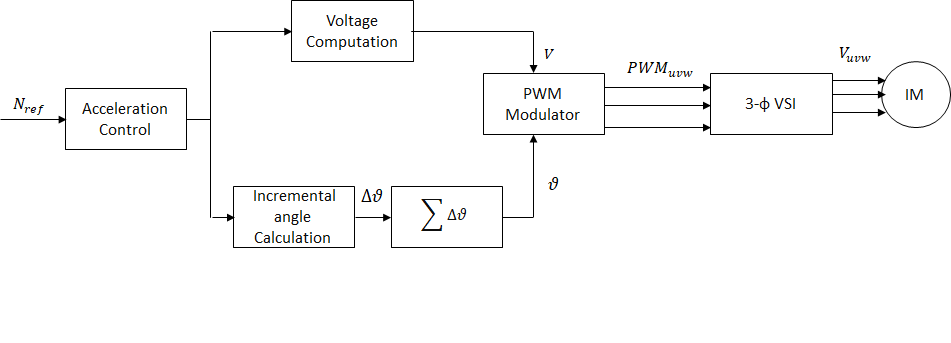
The V/Hz control is a scalar control motor control strategy where the applied ratio of applied AC voltage and frequency is kept constant. The V/Hz control is carried out in the following steps-
1. Read the commanded speed request.
2. Determination of angular displacement per speed loop cycle.
3. Determination of AC voltage magnitude based on the angular displacement per speed loop cycle.
4. Determination of PWM modulation values for voltage source inverter.
5. Application of calculated PWM values to three phases of the ACIM motor.
The requested ACIM motor speed is mapped to the angular displacement by using the following relation:
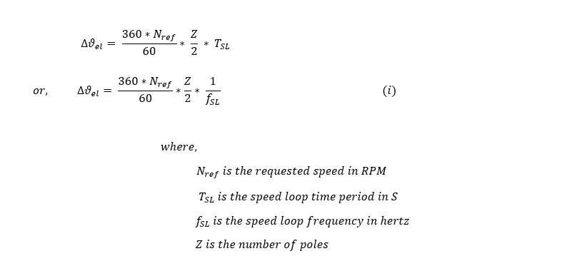
For fixed point implementation, the input speed is scaled from ( 0 , Nrated ) to ( 0 , 214 ) units.
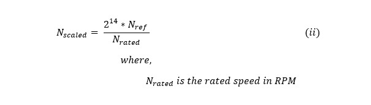
From (i) and (ii), we get,
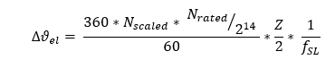
For fixed point implementation, the angle is scaled from ( 0 , 360 deg ) to ( 0 , 216 ) units. Thus the final equation becomes:
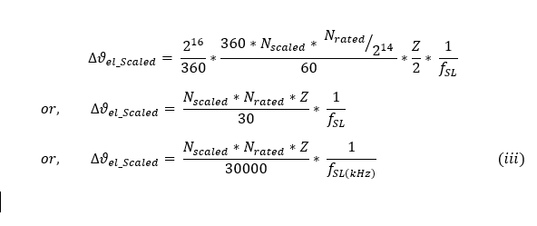
The AC voltage magnitude is determined based on the requested RPM based on following relation:
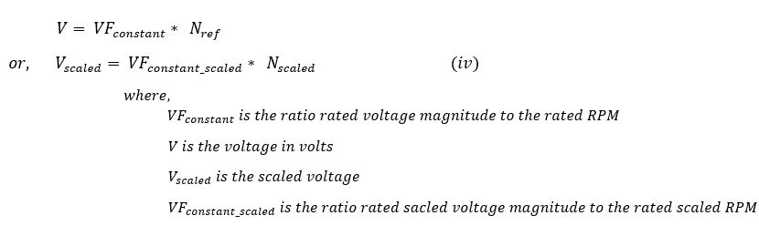
The calculated voltage magnitude and phase is modulated using SVPWM approach to generate corresponding three phase gate control signals. This PWM modulation approach utilizes third order harmonic injection to increase the inverter DC bus utilization by about 15%. The following diagram shows the typical SVPWM waveform with third order harmonic injection -
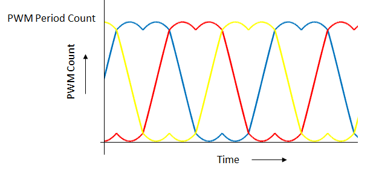
An interrupt based approach is used for the software implementation. There are three threads: main thread, ADC ISR thread, and a push button ISR thread.
The main thread is used to carry out UART based data communication in polling mode.
ADC ISR thread is used to carry out the actual V/Hz speed control algorithm. This thread is executed cyclically every PWM period as shown in the following figure:
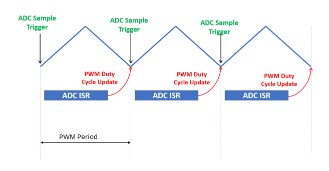
Push button ISR thread is used to carry out start and stop motor operations. This thread is non-cyclic and is executed once there is an external push button switch event.
The following figure shows the activity diagram of threads used in the software -
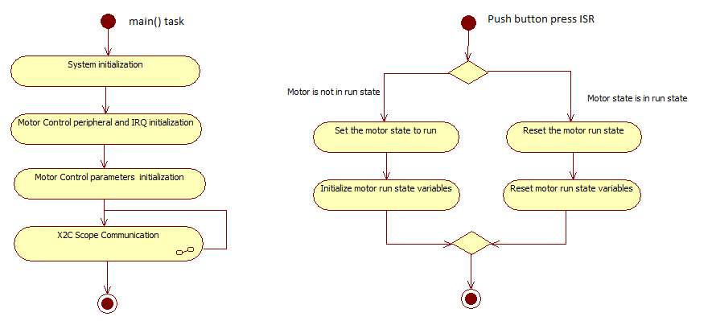
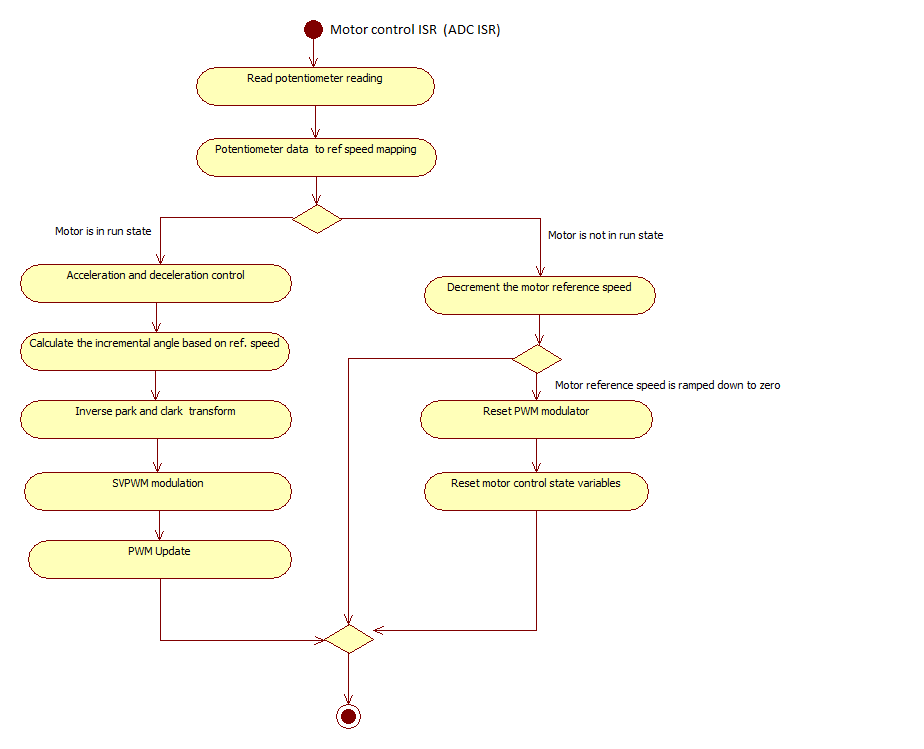
The V/Hz control algorithm can be used to control different ACIM motors. In order to get the correct control of the ACIM motor, the motor specific parameters and application parameters need to be updated in the software. The following section describes how to update both motor and application specific parameters in the the project. These parameter macros can be found in userparams.h header file which can be found under logical path: Header Files > config > <config_name> >userparams.h.
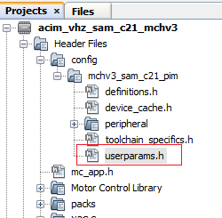
1. Setting motor control PWM frequency:
PWM frequency is set by configuring the timer period of the TCC0 in terms of TCC0 clock counts. The period value +1 set using the MHC needs to be redefined as a macro in userparams.h.
For example, in order to achieve a PWM frequency of 20 KHz, the period value defined in the MHC is 1199. Therefore, the macro defined in userparams.h should be "period value" + 1 = 1200.
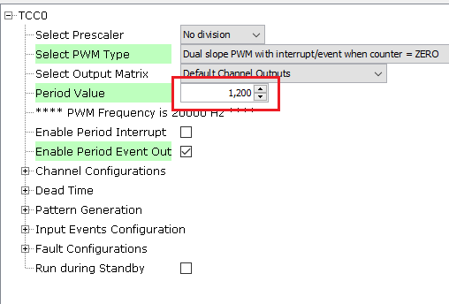
|
Macro |
Description |
|
PWM_HPER_TICKS |
PWM Timer period value = "Period value" defined in MHC + 1 |
2. Setting motor specific parameters:
Set the following motor specific parameters in the userparams.h file.
|
Macro |
Description |
Units |
|
MOTOR_VOLTAGE |
Motor Voltage [Volts] |
Volts |
|
MAX_MOTOR_SPEED |
Maximum motor speed |
RPM |
|
NUMBER_OF_POLES |
Number of poles |
- |
|
MAX_SPEED_SCALED |
Max speed |
Internal units |
|
VF_CONSTANT |
Volts per RPM constant |
Internal units |
|
VF_OFFSET |
Voltage offset at starting zero frequency |
Internal units |
|
START_SPEED_DEFAULT |
Default startup speed |
RPM |
|
ACC_RAMP |
acceleration ramp count in internal unit |
Internal units |
|
DEC_RAMP |
deceleration ramp count in internal unit |
Internal units |
|
SPEED_FILTER_COEFF |
Speed filter coefficient range [1-16] |
- |
The SAMC21 microcontroller devices do not have a floating point unit. Therefore, all the physical real variables are mapped to internal units for fixed point data processing in the software. The following table shows the mapping of physical quantities to their corresponding internal units.
|
Physical Quantities |
Physical Range |
Conversion |
|
Speed |
0 to Nrated |
Physical Value * 214 / Nrated |
|
Angle |
0 to 360 deg |
Physical Value * 216 / 360 |
|
V/F constant |
- |
Physical Value * 12 |
|
Speed Filter coefficient |
0-1 |
Physical Value * 16 |
|
Microchip 32-bit Motor Control
|